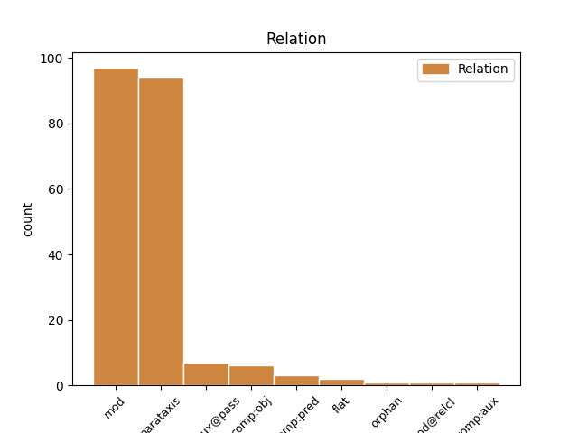
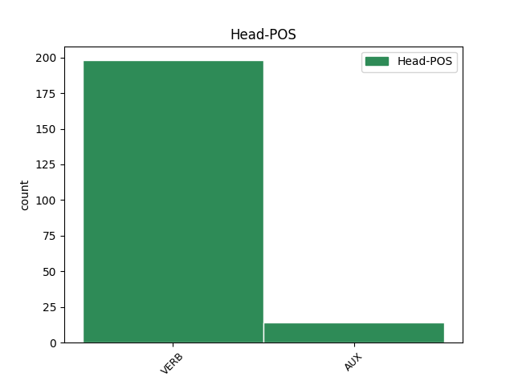
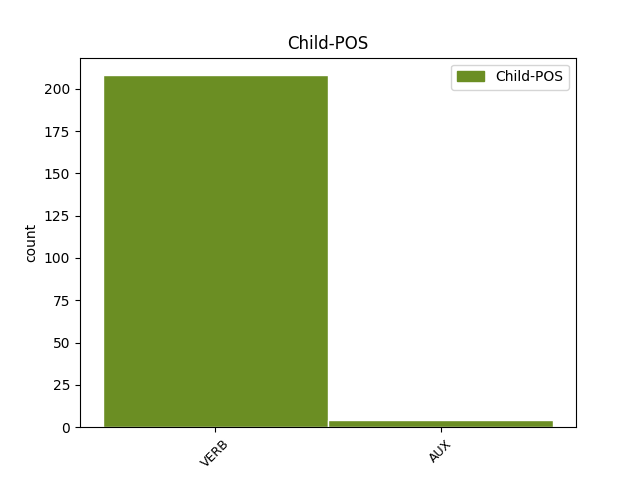

Distribution of features within this leaf



Agreement Rules sorted by frequency.
- When the dependent token is the modifer(mod) of the head token,
1 И _ _ _ _ 0 _ _ _
2 так _ _ _ _ 0 _ _ _
3 и _ _ _ _ 0 _ _ _
4 играли играть VERB _ Aspect=Imp|Mood=Ind|Number=Plur|Tense=Past|VerbForm=Fin|Voice=Act 0 _ _ _
5 развеселые _ _ _ _ 0 _ _ _
6 каверы _ _ _ _ 0 _ _ _
7 на _ _ _ _ 0 _ _ _
8 Billy _ _ _ _ 0 _ _ _
9 Jean _ _ _ _ 0 _ _ _
10 и _ _ _ _ 0 _ _ _
11 Джо _ _ _ _ 0 _ _ _
12 Дассена _ _ _ _ 0 _ _ _
13 до _ _ _ _ 0 _ _ _
14 часу _ _ _ _ 0 _ _ _
15 ночи _ _ _ _ 0 _ _ _
16 ( _ _ _ _ 0 _ _ _
17 начав начать VERB _ Aspect=Perf|Tense=Past|VerbForm=Conv|Voice=Act 4 mod _ _
18 в _ _ _ _ 0 _ _ _
19 10 _ _ _ _ 0 _ _ _
20 , _ _ _ _ 0 _ _ _
21 из _ _ _ _ 0 _ _ _
22 чего _ _ _ _ 0 _ _ _
23 сделаны _ _ _ _ 0 _ _ _
24 эти _ _ _ _ 0 _ _ _
25 мальчики _ _ _ _ 0 _ _ _
26 ?! _ _ _ _ 0 _ _ _
27 ) _ _ _ _ 0 _ _ _
28 . _ _ _ _ 0 _ _ _
1 И _ _ _ _ 0 _ _ _
2 так _ _ _ _ 0 _ _ _
3 и _ _ _ _ 0 _ _ _
4 играли _ _ _ _ 0 _ _ _
5 развеселые _ _ _ _ 0 _ _ _
6 каверы _ _ _ _ 0 _ _ _
7 на _ _ _ _ 0 _ _ _
8 Billy _ _ _ _ 0 _ _ _
9 Jean _ _ _ _ 0 _ _ _
10 и _ _ _ _ 0 _ _ _
11 Джо _ _ _ _ 0 _ _ _
12 Дассена _ _ _ _ 0 _ _ _
13 до _ _ _ _ 0 _ _ _
14 часу _ _ _ _ 0 _ _ _
15 ночи _ _ _ _ 0 _ _ _
16 ( _ _ _ _ 0 _ _ _
17 начав начать VERB _ Aspect=Perf|Tense=Past|VerbForm=Conv|Voice=Act 0 _ _ _
18 в _ _ _ _ 0 _ _ _
19 10 _ _ _ _ 0 _ _ _
20 , _ _ _ _ 0 _ _ _
21 из _ _ _ _ 0 _ _ _
22 чего _ _ _ _ 0 _ _ _
23 сделаны делать VERB _ Aspect=Perf|Number=Plur|Tense=Past|Variant=Short|VerbForm=Part|Voice=Pass 17 parataxis _ _
24 эти _ _ _ _ 0 _ _ _
25 мальчики _ _ _ _ 0 _ _ _
26 ?! _ _ _ _ 0 _ _ _
27 ) _ _ _ _ 0 _ _ _
28 . _ _ _ _ 0 _ _ _
1 Был быть AUX VERB Aspect=Imp|Gender=Masc|Mood=Ind|Number=Sing|Tense=Past|VerbForm=Fin|Voice=Act 0 _ _ _
2 Иов _ _ _ _ 0 _ _ _
3 Господом _ _ _ _ 0 _ _ _
4 вознагражден вознаградить VERB VERB Aspect=Perf|Gender=Masc|Number=Sing|Tense=Past|Variant=Short|VerbForm=Part|Voice=Pass 1 comp:aux@pass _ _
5 И _ _ _ _ 0 _ _ _
6 трижды _ _ _ _ 0 _ _ _
7 , _ _ _ _ 0 _ _ _
8 и _ _ _ _ 0 _ _ _
9 четырежды _ _ _ _ 0 _ _ _
10 возвышен _ _ _ _ 0 _ _ _
11 Противу _ _ _ _ 0 _ _ _
12 прежнего _ _ _ _ 0 _ _ _
13 . _ _ _ _ 0 _ _ _
1 8 _ _ _ _ 0 _ _ _
2 . _ _ _ _ 0 _ _ _
3 Противостоит _ _ _ _ 0 _ _ _
4 ей _ _ _ _ 0 _ _ _
5 мне _ _ _ _ 0 _ _ _
6 - _ _ _ _ 0 _ _ _
7 пох _ _ _ _ 0 _ _ _
8 - _ _ _ _ 0 _ _ _
9 баба _ _ _ _ 0 _ _ _
10 , _ _ _ _ 0 _ _ _
11 ребёнок _ _ _ _ 0 _ _ _
12 только _ _ _ _ 0 _ _ _
13 об _ _ _ _ 0 _ _ _
14 стену _ _ _ _ 0 _ _ _
15 не _ _ _ _ 0 _ _ _
16 долбиться _ _ _ _ 0 _ _ _
17 , _ _ _ _ 0 _ _ _
18 а _ _ _ _ 0 _ _ _
19 она _ _ _ _ 0 _ _ _
20 сидит сидеть VERB _ Aspect=Imp|Mood=Ind|Number=Sing|Person=3|Tense=Pres|VerbForm=Fin|Voice=Act 0 _ _ _
21 книжку _ _ _ _ 0 _ _ _
22 читает читать VERB _ Aspect=Imp|Mood=Ind|Number=Sing|Person=3|Tense=Pres|VerbForm=Fin|Voice=Act 20 comp:pred _ SpaceAfter=No
23 . _ _ _ _ 0 _ _ _
1 Хочу хотеть VERB _ Aspect=Imp|Mood=Ind|Number=Sing|Person=1|Tense=Pres|VerbForm=Fin|Voice=Act 0 _ _ _
2 - _ _ _ _ 0 _ _ _
3 хочу _ _ _ _ 0 _ _ _
4 - _ _ _ _ 0 _ _ _
5 хочу хотеть VERB _ Aspect=Imp|Mood=Ind|Number=Sing|Person=1|Tense=Pres|VerbForm=Fin|Voice=Act 1 flat _ _
6 их _ _ _ _ 0 _ _ _
7 ! _ _ _ _ 0 _ _ _
8 💜 _ _ _ _ 0 _ _ _
1 Их _ _ _ _ 0 _ _ _
2 отличает отличать VERB _ Aspect=Imp|Mood=Ind|Number=Sing|Person=3|Tense=Pres|VerbForm=Fin|Voice=Act 0 _ _ _
3 харизма _ _ _ _ 0 _ _ _
4 , _ _ _ _ 0 _ _ _
5 приятная _ _ _ _ 0 _ _ _
6 внешность _ _ _ _ 0 _ _ _
7 , _ _ _ _ 0 _ _ _
8 живой _ _ _ _ 0 _ _ _
9 аналитический _ _ _ _ 0 _ _ _
10 ум _ _ _ _ 0 _ _ _
11 , _ _ _ _ 0 _ _ _
12 хорошее _ _ _ _ 0 _ _ _
13 воспитание _ _ _ _ 0 _ _ _
14 и _ _ _ _ 0 _ _ _
15 манеры _ _ _ _ 0 _ _ _
16 , _ _ _ _ 0 _ _ _
17 за _ _ _ _ 0 _ _ _
18 которыми _ _ _ _ 0 _ _ _
19 всегда _ _ _ _ 0 _ _ _
20 спрятан _ _ _ _ 0 _ _ _
21 сильный _ _ _ _ 0 _ _ _
22 взгляд _ _ _ _ 0 _ _ _
23 , _ _ _ _ 0 _ _ _
24 в _ _ _ _ 0 _ _ _
25 котором _ _ _ _ 0 _ _ _
26 едва _ _ _ _ 0 _ _ _
27 просматривается просматриваться VERB _ Aspect=Imp|Mood=Ind|Number=Sing|Person=3|Tense=Pres|VerbForm=Fin|Voice=Mid 2 mod@relcl _ _
28 небольшая _ _ _ _ 0 _ _ _
29 грусть _ _ _ _ 0 _ _ _
30 . _ _ _ _ 0 _ _ _
1 @xxxxxx _ _ _ _ 0 _ _ _
2 ПУСТЬ _ _ _ _ 0 _ _ _
3 ПАРНАС _ _ _ _ 0 _ _ _
4 БУДЕТ _ _ _ _ 0 _ _ _
5 НА _ _ _ _ 0 _ _ _
6 ВЫБОРАХ _ _ _ _ 0 _ _ _
7 - _ _ _ _ 0 _ _ _
8 ЗАТО _ _ _ _ 0 _ _ _
9 НАШИ _ _ _ _ 0 _ _ _
10 ВЫСШИЕ _ _ _ _ 0 _ _ _
11 ЧИНОВНИКИ _ _ _ _ 0 _ _ _
12 УЗНАЮТ узнавать VERB _ Aspect=Imp|Mood=Ind|Number=Plur|Person=3|Tense=Pres|VerbForm=Fin|Voice=Act 0 _ _ _
13 - _ _ _ _ 0 _ _ _
14 КТО _ _ _ _ 0 _ _ _
15 , _ _ _ _ 0 _ _ _
16 И _ _ _ _ 0 _ _ _
17 КАК _ _ _ _ 0 _ _ _
18 ЗА _ _ _ _ 0 _ _ _
19 НИХ _ _ _ _ 0 _ _ _
20 ВСЕХ _ _ _ _ 0 _ _ _
21 ГОЛОСУЕТ голосовать VERB _ Aspect=Imp|Mood=Ind|Number=Sing|Person=3|Tense=Pres|VerbForm=Fin|Voice=Act 12 comp:obj _ SpaceAfter=No
22 . _ _ _ _ 0 _ _ _
1 могучий _ _ _ _ 0 _ _ _
2 панцырь _ _ _ _ 0 _ _ _
3 был быть AUX VERB Aspect=Imp|Gender=Masc|Mood=Ind|Number=Sing|Tense=Past|VerbForm=Fin|Voice=Act 0 _ _ _
4 утыкан утыкивать VERB VERB Aspect=Perf|Gender=Masc|Number=Sing|Tense=Past|Variant=Short|VerbForm=Part|Voice=Pass 3 comp:aux _ _
5 шмелями _ _ _ _ 0 _ _ _
6 плавунами _ _ _ _ 0 _ _ _
7 и _ _ _ _ 0 _ _ _
8 львами _ _ _ _ 0 _ _ _
Disagree Examples:
1 В _ _ _ _ 0 _ _ _
2 какие _ _ _ _ 0 _ _ _
3 тьмы _ _ _ _ 0 _ _ _
4 , _ _ _ _ 0 _ _ _
5 голося голосить VERB _ Aspect=Imp|Tense=Pres|VerbForm=Conv|Voice=Act 7 mod _ SpaceAfter=No
6 , _ _ _ _ 0 _ _ _
7 пойдут пойти VERB _ Aspect=Perf|Mood=Ind|Number=Plur|Person=3|Tense=Fut|VerbForm=Fin|Voice=Act 0 _ _ _
8 , _ _ _ _ 0 _ _ _
9 с _ _ _ _ 0 _ _ _
10 бедою _ _ _ _ 0 _ _ _
11 , _ _ _ _ 0 _ _ _
12 не _ _ _ _ 0 _ _ _
13 налегке _ _ _ _ 0 _ _ _
14 ?! _ _ _ _ 0 _ _ _
1 Завтра _ _ _ _ 0 _ _ _
2 будут _ _ _ _ 0 _ _ _
3 дебаты _ _ _ _ 0 _ _ _
4 , _ _ _ _ 0 _ _ _
5 и _ _ _ _ 0 _ _ _
6 , _ _ _ _ 0 _ _ _
7 судя судить VERB _ Aspect=Imp|Tense=Pres|VerbForm=Conv|Voice=Act 19 parataxis _ _
8 по _ _ _ _ 0 _ _ _
9 всему _ _ _ _ 0 _ _ _
10 , _ _ _ _ 0 _ _ _
11 от _ _ _ _ 0 _ _ _
12 " _ _ _ _ 0 _ _ _
13 Гражданской _ _ _ _ 0 _ _ _
14 Силы _ _ _ _ 0 _ _ _
15 " _ _ _ _ 0 _ _ _
16 опять _ _ _ _ 0 _ _ _
17 никто _ _ _ _ 0 _ _ _
18 не _ _ _ _ 0 _ _ _
19 придёт прийти VERB _ Aspect=Perf|Mood=Ind|Number=Sing|Person=3|Tense=Fut|VerbForm=Fin|Voice=Act 0 _ _ _
20 . _ _ _ _ 0 _ _ _
1 Думаю думать VERB _ Aspect=Imp|Mood=Ind|Number=Sing|Person=1|Tense=Pres|VerbForm=Fin|Voice=Act 4 parataxis _ SpaceAfter=No
2 , _ _ _ _ 0 _ _ _
3 Вы _ _ _ _ 0 _ _ _
4 сможете смочь VERB _ Aspect=Perf|Mood=Ind|Number=Plur|Person=2|Tense=Fut|VerbForm=Fin|Voice=Act 0 _ _ _
5 . _ _ _ _ 0 _ _ _
1 судя судить VERB _ Aspect=Imp|Tense=Pres|VerbForm=Conv|Voice=Act 10 parataxis _ _
2 по _ _ _ _ 0 _ _ _
3 всему _ _ _ _ 0 _ _ _
4 , _ _ _ _ 0 _ _ _
5 субстанции _ _ _ _ 0 _ _ _
6 " _ _ _ _ 0 _ _ _
7 партии _ _ _ _ 0 _ _ _
8 ПАРНАС _ _ _ _ 0 _ _ _
9 " _ _ _ _ 0 _ _ _
10 были быть AUX _ Aspect=Imp|Mood=Ind|Number=Plur|Tense=Past|VerbForm=Fin|Voice=Act 0 _ _ _
11 зачаты _ _ _ _ 0 _ _ _
12 в _ _ _ _ 0 _ _ _
13 презервативе. _ _ _ _ 0 _ _ _
14 ... _ _ _ _ 0 _ _ _
1 RT _ _ _ _ 0 _ _ _
2 @xxxxxx _ _ _ _ 0 _ _ _
3 : _ _ _ _ 0 _ _ _
4 Потому _ _ _ _ 0 _ _ _
5 что _ _ _ _ 0 _ _ _
6 протесты _ _ _ _ 0 _ _ _
7 не _ _ _ _ 0 _ _ _
8 может мочь VERB _ Aspect=Imp|Mood=Ind|Number=Sing|Person=3|Tense=Pres|VerbForm=Fin|Voice=Act 0 _ _ _
9 организовать _ _ _ _ 0 _ _ _
10 в _ _ _ _ 0 _ _ _
11 принципе _ _ _ _ 0 _ _ _
12 - _ _ _ _ 0 _ _ _
13 на _ _ _ _ 0 _ _ _
14 2 _ _ _ _ 0 _ _ _
15 % _ _ _ _ 0 _ _ _
16 далеко _ _ _ _ 0 _ _ _
17 не _ _ _ _ 0 _ _ _
18 уедешь уехать VERB _ Aspect=Perf|Mood=Ind|Number=Sing|Person=2|Tense=Fut|VerbForm=Fin|Voice=Act 8 parataxis _ SpaceAfter=No
19 ... _ _ _ _ 0 _ _ _